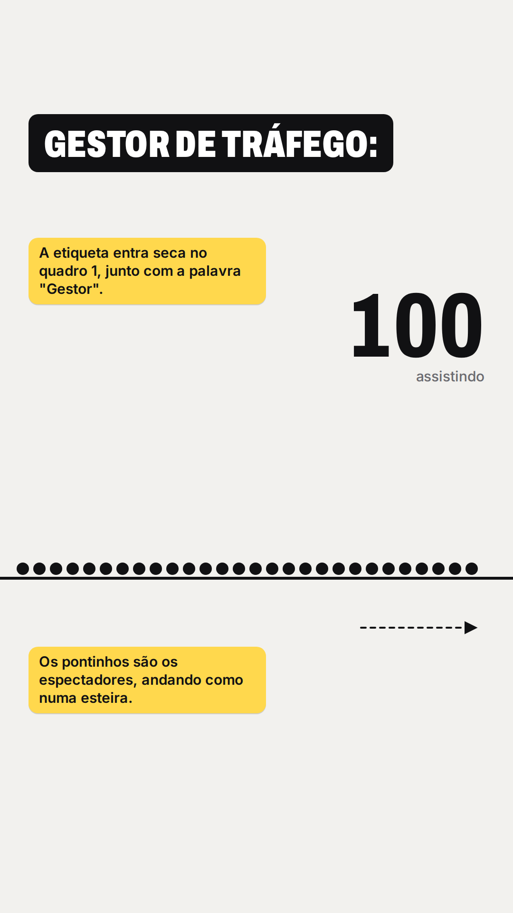
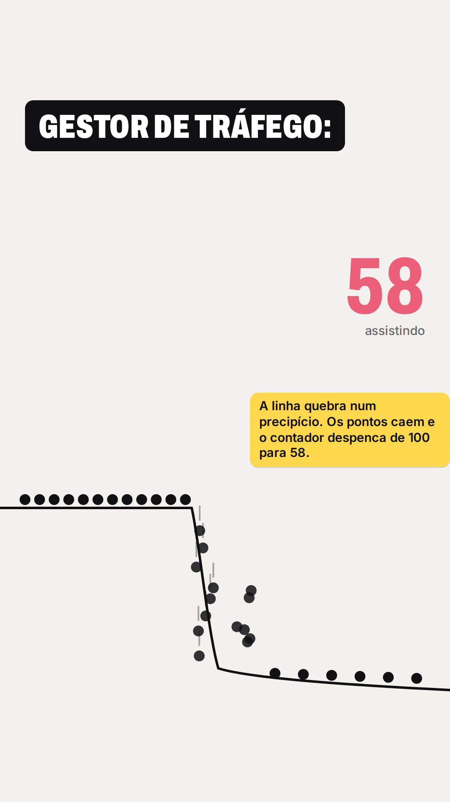
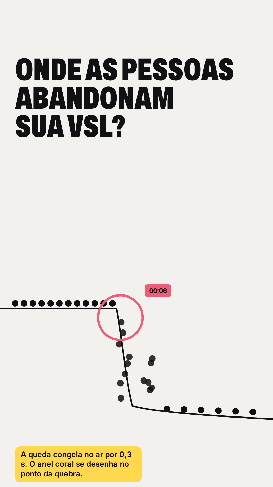
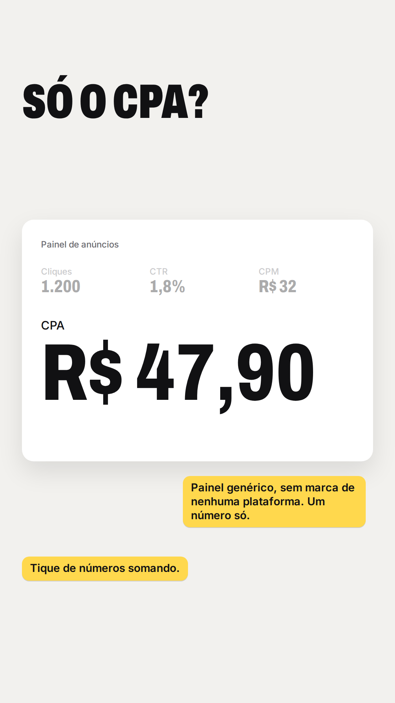
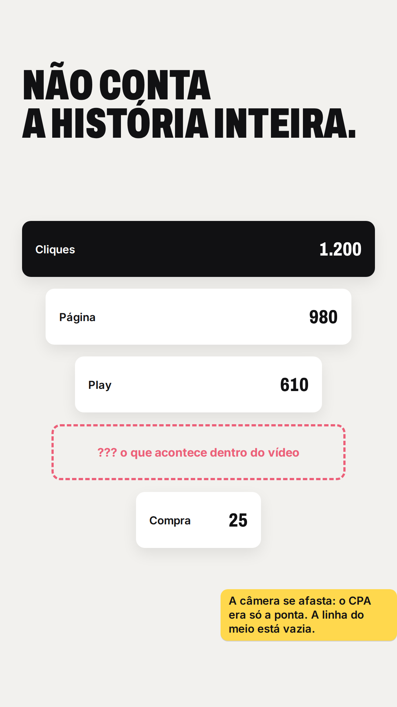
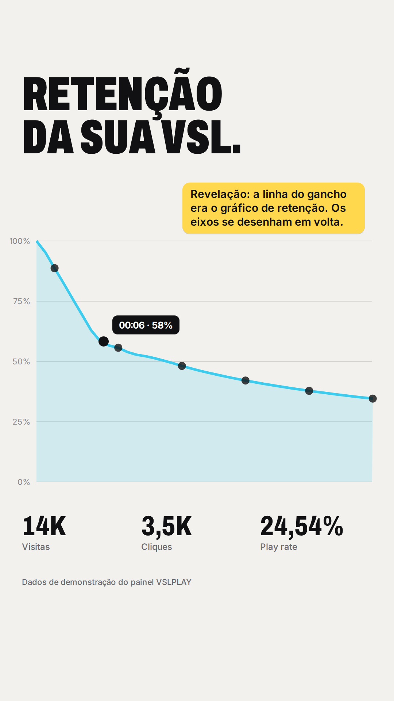

Parte 1 de 2 · cerca de 40 s · vertical 9:16 · espectadores caindo de um precipício que, na cena 3, se revela o gráfico de retenção

01 · 0,0 s Gancho
"GESTOR DE TRÁFEGO:" entra seco. 100 pontinhos andando.
"Gestor de tráfego…"

02 · 0,8 s Gancho
A linha vira precipício: 100 caem para 58.
"você sabe exatamente…"

03 · 2,0 s Gancho
A queda congela. Anel coral no 00:06 e a pergunta.
"onde as pessoas estão abandonando sua VSL?"

04 · 0:07 Cena 2
Painel de anúncios com um número só: o CPA.
"olhar apenas o CPA…"

05 · 0:10 Cena 2
O CPA vira a ponta de um funil com um buraco no meio.
"não conta a história inteira."

06 · 0:13 Cena 3 · virada
A linha do gancho vira o gráfico de retenção do VSLPLAY.
"Com o VSL Play, você consegue acompanhar a retenção…"